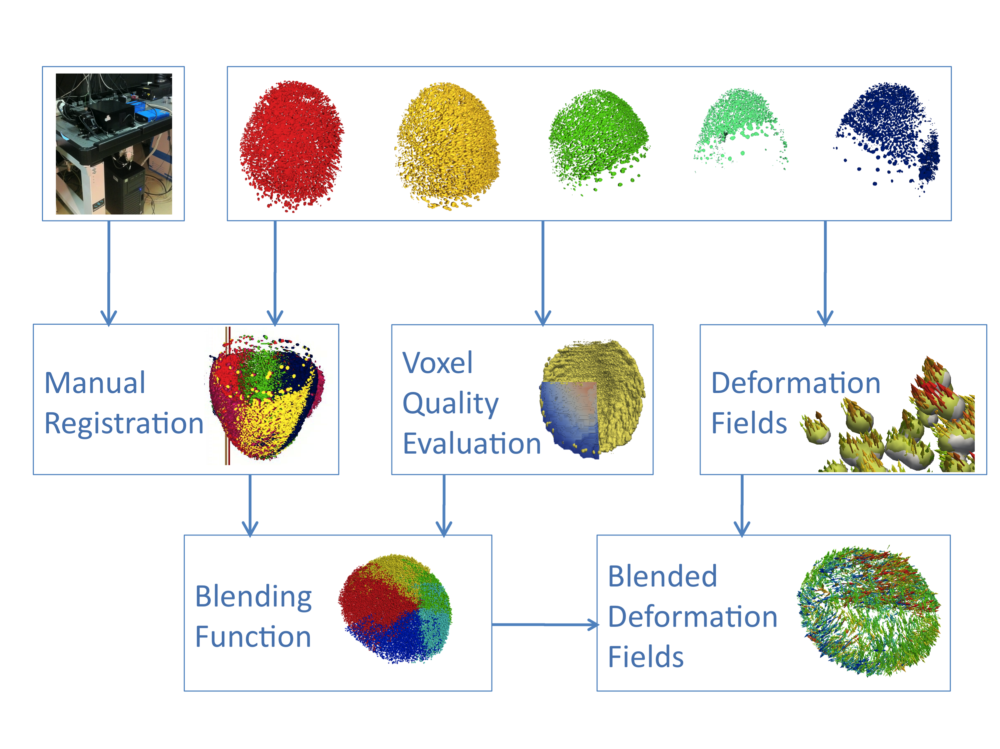
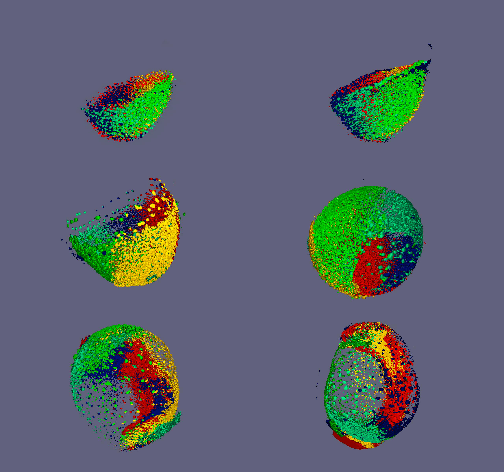
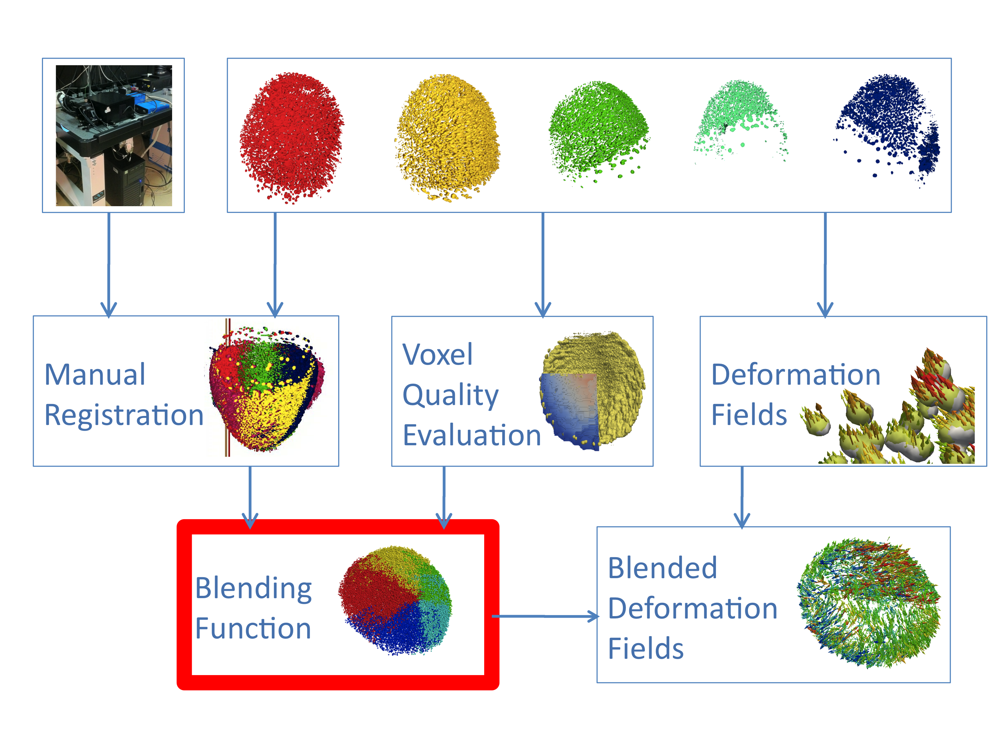
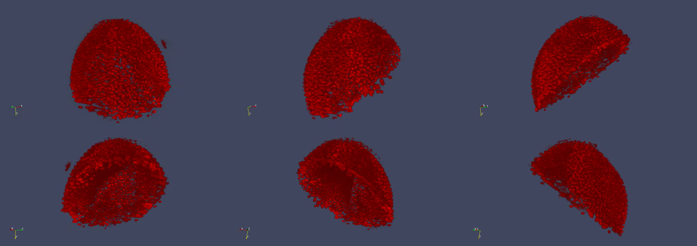
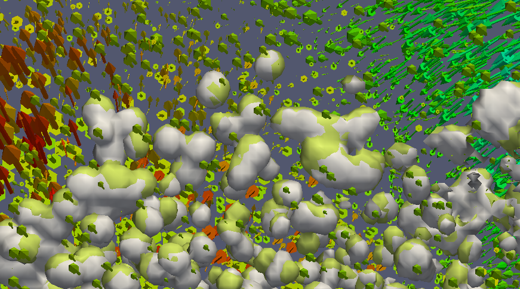

6. Reconstruction of the Zebrafish early development
Cell lineage from the Caenorhabditis elegans embryonics and larval stages from Kipreos, E.T., 2005. C. elegans cell cycles: invariance and stem cell divisions. Nature reviews Molecular cell biology, 6(10), pp.766–776.
Objective: Reconstruction of the complete cell lineage tree of the Zebrafish early development. The lineage tree is augmented by the spatial coordinates and the shape of the cells (3D+time digital embryo) and by the quantification of various gene expression of the cells (Atlas of genetic expression).
The reconstruction task is a very tedious one and semi or complete automation is the only solution to tackle such an enormous lineage tree.
In this section, we will introduce the past and current strategies originated by the European project Embryomics and Bioemergences and pursued the Bioemergences team. This section is divided as the following:
Various challenges: in addition to the challenges to design the aforementioned reconstruction strategy, various challenges arises from the limitation of the current imaging setups.
Workflow inputs: raw data
The workflow is efficient if the spatio-temporal resolution of the raw data produced by the microscope device satisfies some required signal properties.
spatially, the signal-to-noise ratio must be limited and the local resolution of the
temporally, the difference between two images of the same region must be small enough as the image must not move too much.
Unfortunately, these two requirements are antagonists and a trade-off must be found
Solution:
Most of the improvement must be applied in the imaging technique area but, given their limitations, algorithmic bandages must be designed to overcome them.
in toto
error-less: automated vs manual (introduire application thierry),
channel limitation
The prototype
review of embryogenesis reconstruction :
Keller, P.J. et al., 2008. Reconstruction of zebrafish early embryonic development by scanned light sheet microscopy. Science, 322(5904), pp.1065–1069.
Giurumescu, C.A. et al., 2012. Quantitative semi-automated analysis of morphogenesis with single-cell resolution in complex embryos. Development, 139(22), pp.4271–4279.
example reconstruction:
Xiong, Y. & Iglesias, P.A., 2010. Tools for analyzing cell shape changes during chemotaxis. Integrative Biology, 2(11-12), pp.561–567.
6.1. Production of experimental data
6.1.1. Microscopy
6.1.2. RNAinjection
6.1.3. Mutants
6.1.4. Atlas
6.2. Reconstruction workflow
review -> Khairy, K. & Keller, P.J., 2011. Reconstructing embryonic development P. M. Kulesa, M. E. Dickinson, & A.-K. Hadjantonakis, eds. genesis, 49(7), pp.488–513.
6.2.1. Bioemergences existing workflow
Workflow of reconstruction of the cell lineage
6.2.2. New modules
Methodology

in toto displacement field reconstruction workflow
The bi-photonic microscopy devices do not allow the capture of the entire zebrafish embryo because of the optical loss of signal in the depth of the tissue.
One solution is to take advantage of the spherical shape of the embryo during the early gastrulation and rotate it to capture multiple views and thus cover the all volume without major deformation. This solution has a pitfall, the imaging time lasts longer as consecutive angles of view have to capture superposed region of the embryo. Fortunately, a recent microscopic device, the Digital Scanning Light Microscope (DSLM), increases the speed of light-scanning thanks to its ability to illuminate and record the signal emitted by the embryo plane by plane and not only point by point. Faster recording means the possibility of make temporal comparison of 3D volume to extract the dynamics of the reconstructed cell trajectories evoked in the previous section.
However, the quality of the signal is different that the one generated by the bi-photon illuminated device used in the previous section so the reconstruction strategies had to be adapted to extract the reconstructed dynamics. We decide to leave the reconstruction of the in toto lineage tree for further investigation and instead create the more accessible reconstruction of the in toto deformation field of the embryo. The workflow is presented in this section.
Resumé des étapes XXXX à faire:
Manual registration
The DSLM allows the rapid imaging of embryos and, coupled with a rotating device, is able to record multiple views of the same embryos. In the following, we will present an example of multi-view with five angles of view.
Describe the DSLM
In this section 6.2 ???XXXX, we will use the following conventions for the axes of the each views. The axis from the camera to embryo is the z-axis or depth, the horizontal axis of the light plane is the x-axis and the vertical axis of the light plane is the y-axis.
SPIM set up.
Reconstructing an in toto view of the embryo require the spatial fusion of the five views in a reference frame. Even if sophisticated method of non-rigid spatial registration based on raw image processing are currently developed (curvelet-based ??? XXXX josé ???), we decide to take advantage of the knowledge of the geometrical motion of the rotating plate of the device to geometrically infer a rigid spatial registration. Moreover, we assume that the spatial registration parameters will remained unchanged for each time step on the imaging process as the embryo does not move in its agarose chamber and the rotating plate exerts precise and controlled displacement. So the parameters are computed at a single time step and will be applied to every time steps.
The embryo is mounted into a cylindrical agarose tube. The tube is fixed on a table which can rotate around the cylinder central axis and translate it. As the embryo never passes exactly through the central axis of the cylinder, the software which control the motion of the table as to be calibrated before the time-lapse starts. The calibration phase is equivalent to the following process: the operator is asked to center the embryo in the light plane. Once he validates the position, the software performs a 100 degree rotation and the operator is again asked to center the embryo in the light plane. From the translation vector that operator has determined to re-center the embryo, the software computes the relative position of the embryo to the cylinder rotation center. However, the estimation of the center of the embryo is not really precisely done by the operator. First, he only sees a projection along the z-axis, and as the embryo has been rotated, he does not have the same aspect on the screen. The computed relative position is only an approximation of the real relative position.
We built an interactive graphical interface to manually correct the estimation error, and determine the optimal relative position. The two parameters controlled by the user of the interface are the coordinates of the correction vector. As the user moves them, he can directly observed the computed motion of the 5 views and thus determine the optimal correction vector. For this task, the margin nuclei which are separated from the mass of the deep cells offer useful landmarks to allow a precise determination of these two parameters (figure XXXX).
The 5 views are now registrated and the time lapse registration may be performed. However, as it can be seen on figure XXX, the optical deformation induced by the perturbation of the light path by the embryonic tissue creates a very unsatisfying result, the following module will aim at cleaning the deformed part of each views.

Voxel quality evaluation
This module is independent form the previous one and it aims at determining, on each view of each time step, which spatial region of the volume has the better signal quality. The effective goal of this module is to attribute a score to each voxel of the volume, score which expresses the quality of signal of this voxel.
The assumption supporting the voxel quality evaluation is based on the observation that the more the light path pass through the embryo, the more the signal is degraded. The light path through the embryo is decomposed in two sub-paths: the path of light from the laser to excited molecule, and the path of light emitted by the molecule to the camera. As the relevant part of the light path is inside the embryo, we perform a geometrical computation to determine the length of light path for each voxel of the volume from the physical border of the embryo. The fist part of this module focuses on the computation of this border and the second on the computation of the length. It may be summarized as the following:
1. To illuminate the low intensity background noise, the average intensity of the voxel in the volume is computed and used to determine the isosurface of the nuclei shapes (vtkContourFilter) (figure XXXX a).
2. After a random decimation of the triangles to lower the number of their vertices (vtkDecimatePro), large enough metaballs centered on these vertices are created to obtain a non-empty surface of the embryo (vtkGaussianSplatter then vtkContourFilter). A binary stencil of the image is extracted to store the shape of the embryo (vtkImageStencil).
3. As some undesired signal may remain out of the embryo shape, we suppose that the closed region which has the larger volume correspond to the embryo so we remove the smaller ones (figure XXXX b).
4. The metaballs create a embryo border volume which is larger than desired so we erode the volume by the radius of the metaball to get the physical border of the embryo. The volume is stored as a binary data with value 1 (0) for voxel inside (outside) the border (figure XXXX c).
5. As each view is oriented with the z-axis along the camera path and the x-axis along the illumination plane, it is straightforward to compute both distances from the border along the x and z axes as the number of 1 along both axes (figure XXXX d, e). The voxels which are out of the border get an eliminatory score as they can not be used for the registration task (figure XXXX f).
6. We also eliminate the voxels which are situated after a cutoff value in both direction as they belong to part of the image that is too degraded to be used (the cutoff value is about 200 microns) (figure XXX g, h, i).
Blending function

The objective of this task is to use both the manual registration and the voxel quality evaluation module to build a blending function which will select which part of which view is used in the in toto registrated volume. The function is represented as a 3D integer volume whom each voxel correspond to the id of the more relevant angle of view according to its quality evaluation.
With the coordinates of center of rotation of the microscope table, we are now able to set all 5 views into a common reference volume (figure XXXX). We scan each voxel of this reference volume and check in each projected angle of view if it belongs to the inside of the embryo border evaluated in the previous section. If it belongs :
to none of them, a 0 value is attributed to the reference voxel,
to an evaluated part of a single angle of view, the id of this angle of view is attributed to the reference voxel (from 1 to 5),
to evaluated parts of multiple angles of view, we pick the id of the angle of view which provide the higher voxel quality evaluation at this position and attribute it to the reference voxel.
This allows the production of the integer mask shown in figure XXX. This mask is used to extract the voxel information for the relevant angle of view. Instead of using the maximum voxel quality evaluation, we could also use these scores to compute an weighted average of each angle.
An exemple of application is exposed in figure XXX with the direct selection of the pixel intensity, it provide a first in toto registration of the embryo. However, the objective of this workflow is to apply the blending function to the deformation field.

Deformation fields
vtkGaussianSplatter
The objective of the module is to reconstruct the spatial deformation that relate two 3D volume at consecutive time step. Each volume is one of the five angles of view produced by the DLSM. We call A and B two generic consecutive 3D volumes. A and B must have the same dimension.
The notion of image deformation is close to the notion of optical flow as it aims at computing the image motion between consecutive images. We use a non-rigid registration method called "Demons Registration", it acts as if voxel-sized "demons" were were pulling and push the voxel of volume B along the local gradient of the volume A. The method is iterative as the demons may work until during a specific number of step or until a matching criteria is reached. The implementation we use is based on Thirion's algorithm (itk::DemonsRegistrationFilter).
This method takes as inputs two volumes A and B and compute a new volume whose voxel are 3D scalar vectors representing the local voxel motion to morph B into A. Figure XXXX shows the superposition of the isosurfaces of two consecutive time step's volume at the marginal region of the Zebrafish embryo. The motion of the image is superposed on figure XXXX. The deformation field is computed for the all image A and B, not only in the relevant part of the images. Thus, we perform a filtering of the deformation field based on their position. The vectors belonging to voxels which are inside the nuclei envelopes (determined by an isosurface thresholding at two times the averaged volume intensity) are kept and the others are set to null vector. We obtain the deformation fields for each angle of view independently.
The next module deals with the blending of these deformation fields.

Blended deformation fields
The blending function is applied on the deformation vector field obtained in the previos section. Each voxel of the reference volume has the deformation vector from the angle of view which has the larger quality evaluation score.